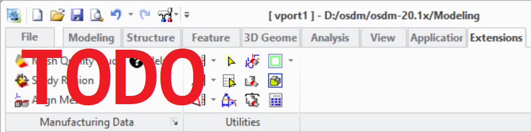

The Extension Module User Interface
The functionality of this extension module is accessible from the Modeling user interface in several locations. The most used dialogs of the extension module are accessible via a command group in the [:CADM-CMD-GROUP-TITLE](:rcr :resource) tab of the Modeling ribbon bar.

- TODO: Describe UI items
- Help actions:
- Display the doc documentation for the [:MODULE-TITLE](:rcr :resource)
- Display general module information. See also []('rcr:about-module :function)
- [:summary]('RCR_SETTINGS :dialog)
Module help and management dialogs are available in following locations:
- File -> Settings -> [:CADM-CMD-GROUP-TITLE](:rcr :resource) -> [:SETTINGS-CMD-TITLE](:rcr :resource): The [:summary]('RCR_SETTINGS :dialog)
- File -> Modules_: Opens the Modeling module management dialog where the extension module can be (de)activated in the [:EXTENSION-MODULES-PAGE-TITLE](:rcr :resource) tab by (de)selecting [:MODULE-TITLE](:rcr :resource)
- In the ❔ command group located at the right end of the Modeling ribbon bar where the action [:MODULE-TITLE](:rcr :resource) opens the module documentation in the browser.